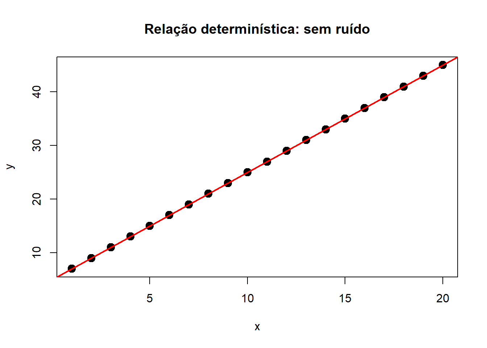
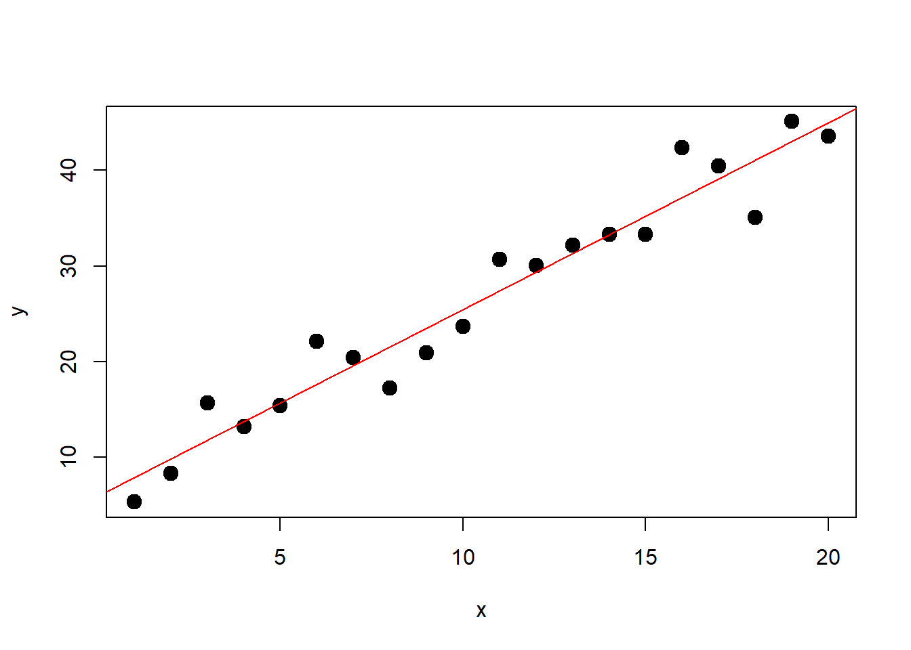
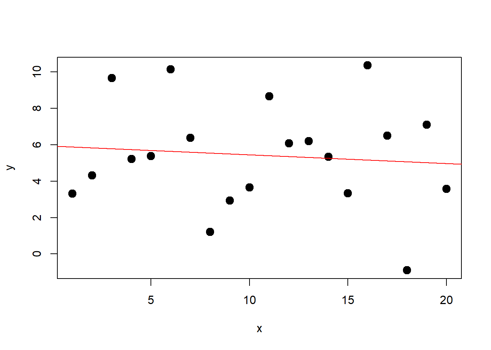

Interpretação dos coeficientes e da significância na regressão linear
Autor
Afiliação
Alessandro de Castro Corrêa
Professor - IFPA
1 Objetivo
Este material apresenta uma forma de interpretar os coeficientes de uma regressão linear simples e avaliar a evidência estatística associada a eles. O exemplo simula duas situações: uma relação linear com inclinação igual a 2 e outra sem inclinação, cuja inclinação populacional é igual a zero. A análise utiliza o gráfico de dispersão, a reta ajustada e a saída de summary() no R.
2 O modelo de regressão
Em um modelo com \(k\) variáveis explicativas, podemos escrever a regressão linear como
em que \(i\) identifica a observação e \(k\) identifica a variável explicativa. Assim, \(X_{i,k}\) é o valor da variável \(k\) na observação \(i\), e \(\beta_k\) é o coeficiente associado a essa variável. Essa convenção corresponde à organização usual da matriz de dados, com observações nas linhas e variáveis nas colunas.
No exemplo deste material, há apenas uma variável explicativa (\(p=1\)); portanto, o modelo se reduz a
onde \(\beta_0\) é o intercepto, \(\beta_1\) é a inclinação e \(\varepsilon_i\) representa a parte de \(Y_i\) que o modelo não explica. No código em R, essa única variável é chamada x; assim, \(X_{i,1}\) corresponde a \(x_i\). O ruído é gerado por uma distribuição normal com média zero e desvio-padrão 3. A reta estimada a partir da amostra é
Intercepto (\(\widehat{\beta}_0\)): valor previsto de \(Y\) quando \(X=0\). Como os valores observados de \(X\) vão de 1 a 20, essa interpretação se refere a uma extrapolação para fora do intervalo observado; neste exemplo, o intercepto é principalmente um parâmetro necessário para posicionar a reta.
Inclinação (\(\widehat{\beta}_1\)): variação média prevista em \(Y\) associada ao aumento de uma unidade em \(X\). Em regressão simples, ela descreve a direção e a intensidade da associação linear estimada.
3 Etapa determinística: relação sem ruído
Antes de adicionar aleatoriedade, podemos observar a relação entre \(X\) e \(Y\) em uma situação determinística. Aqui, cada valor de \(Y\) é calculado exatamente pela expressão \(Y=5+2X\). Portanto, não há desvios em torno da reta.
x <-1:20y_deterministico <-5+2*xplot(y_deterministico ~ x,pch =19,cex =1.5,main ="Relação determinística: sem ruído",xlab ="x",ylab ="y")mod_deterministico <-lm(y_deterministico ~ x)abline(mod_deterministico, col ="red", lwd =2)

coef(mod_deterministico)
(Intercept) x
5 2
Os pontos ficam exatamente sobre a reta. O ajuste recupera intercepto igual a 5 e inclinação igual a 2: a cada unidade adicional de \(X\), \(Y\) aumenta exatamente duas unidades nesta regra determinística.
Neste exemplo, o ajuste serve para visualizar e recuperar os parâmetros usados na fórmula. Não é adequado interpretar um teste de significância convencional: como não há ruído, não há variabilidade residual para estimar a incerteza do modelo. Por isso, não usamos summary() como evidência de significância nesta etapa. A inferência estatística será examinada depois que adicionarmos ruído.
4 Cenário 1: inclinação populacional igual a 2
4.1 Geração dos dados e ajuste
O código abaixo cria valores de \(X\) de 1 a 20 e gera \(Y\) a partir de \(5+2X\), somando um erro aleatório. Em seguida, estima a regressão linear.
x <-1:20set.seed(123)ruido <-rnorm(20, mean =0, sd =3)y <-5+2*x + ruidoplot(y ~ x, pch =19, cex =1.5)mod <-lm(y ~ x)summary(mod)
Call:
lm(formula = y ~ x)
Residuals:
Min 1Q Median 3Q Max
-5.964 -1.808 -0.113 1.558 5.201
Coefficients:
Estimate Std. Error t value Pr(>|t|)
(Intercept) 5.9303 1.3860 4.279 0.000452 ***
x 1.9519 0.1157 16.870 1.78e-12 ***
---
Signif. codes: 0 '***' 0.001 '**' 0.01 '*' 0.05 '.' 0.1 ' ' 1
Residual standard error: 2.984 on 18 degrees of freedom
Multiple R-squared: 0.9405, Adjusted R-squared: 0.9372
F-statistic: 284.6 on 1 and 18 DF, p-value: 1.778e-12
plot(y ~ x, pch =19, cex =1.5)abline(mod, col ="red")

O comando set.seed(123), colocada antes de rnorm(), fixa a sequência pseudoaleatória e permite reproduzir os mesmos resultados em outras execuções.
O processo que gerou os dados tem intercepto 5 e inclinação 2. Por causa do ruído e do tamanho finito da amostra, os coeficientes estimados por lm() normalmente não serão exatamente 5 e 2. Eles tendem a ficar próximos desses valores, mas variam de uma execução para outra.
No gráfico, os pontos representam as observações simuladas e a linha vermelha representa os valores previstos pelo modelo. Uma tendência ascendente indica associação positiva entre \(X\) e \(Y\). A inclinação da linha resume quanto a resposta prevista muda, em média, quando \(X\) aumenta uma unidade.
4.2 Como ler a tabela Coefficients
A chamada summary(mod) apresenta, entre outros resultados, uma tabela semelhante a esta:
Termo
Estimativa
Erro-padrão
Estatística \(t\)
Valor \(p\)
(Intercept)
\(\widehat{\beta}_0\)
\(EP(\widehat{\beta}_0)\)
\(t_0\)
\(p_0\)
x
\(\widehat{\beta}_1\)
\(EP(\widehat{\beta}_1)\)
\(t_1\)
\(p_1\)
Estimate: coeficiente estimado. Na linha x, indica a mudança estimada em \(Y\) para cada unidade adicional de \(X\). Se, por exemplo, o resultado for próximo de 2, o modelo estima que \(Y\) aumenta em cerca de duas unidades, em média, para cada unidade de aumento em \(X\).
Std. Error: erro-padrão da estimativa. Mede a incerteza amostral do coeficiente: erros-padrão menores indicam estimativas mais precisas, consideradas as condições do modelo.
t value: estatística usada no teste de hipótese. Para cada coeficiente, é calculada aproximadamente como estimativa dividida pelo erro-padrão. Para a inclinação, \(t=\widehat{\beta}_1/EP(\widehat{\beta}_1)\).
Pr(\(>|t|\)): valor \(p\) do teste bilateral de que o coeficiente populacional é zero. Para a inclinação, as hipóteses são \(H_0:\beta_1=0\) e \(H_1:\beta_1\ne 0\).
4.3 O que significa a significância da inclinação?
Antes de analisar os dados, define-se um nível de significância, frequentemente \(\alpha=0{,}05\). Se o valor \(p\) da linha x for menor que \(\alpha\), rejeita-se \(H_0\) nesse nível: os dados fornecem evidência de que a inclinação linear é diferente de zero. No primeiro cenário, como a inclinação usada para gerar os dados é 2, espera-se em geral obter uma estimativa positiva e evidência contra \(\beta_1=0\). Isso é uma expectativa do processo de geração, não uma garantia para toda amostra aleatória.
Se o valor \(p\) for maior ou igual a \(\alpha\), não se rejeita \(H_0\). Isso não demonstra que a inclinação seja exatamente zero; significa que, com esses dados e esse modelo, não houve evidência estatística suficiente para distingui-la de zero ao nível escolhido.
O valor \(p\) não é a probabilidade de \(H_0\) ser verdadeira. Ele mede quão incompatíveis seriam os dados (ou resultados mais extremos), supondo que \(H_0\) e as condições do teste fossem verdadeiras.
5 Cenário 2: inclinação populacional igual a zero
O segundo trecho substitui o termo \(2x\) por \(0x\):
y <-5+0*x + ruidomod <-lm(y ~ x)summary(mod)
Call:
lm(formula = y ~ x)
Residuals:
Min 1Q Median 3Q Max
-5.964 -1.808 -0.113 1.558 5.201
Coefficients:
Estimate Std. Error t value Pr(>|t|)
(Intercept) 5.93028 1.38600 4.279 0.000452 ***
x -0.04813 0.11570 -0.416 0.682313
---
Signif. codes: 0 '***' 0.001 '**' 0.01 '*' 0.05 '.' 0.1 ' ' 1
Residual standard error: 2.984 on 18 degrees of freedom
Multiple R-squared: 0.009524, Adjusted R-squared: -0.0455
F-statistic: 0.1731 on 1 and 18 DF, p-value: 0.6823
plot(y ~ x, pch =19, cex =1.5)abline(mod, col ="red")

Agora, os dados são gerados segundo \(Y=5+\varepsilon\), sem efeito linear de \(X\) no processo gerador. A estimativa da inclinação ainda pode ser diferente de zero: flutuações aleatórias fazem com que a amostra apresente uma tendência ascendente ou descendente mesmo quando a inclinação populacional é zero. O teste de significância avalia se a tendência estimada é suficientemente forte em relação à sua incerteza para ser incompatível com \(H_0:\beta_1=0\).
Neste cenário, espera-se que o valor \(p\) da inclinação frequentemente não seja pequeno. Ainda assim, por acaso, uma amostra pode produzir um valor \(p\) abaixo de 0,05. Se o teste e suas suposições forem válidos, esse tipo de falso positivo ocorre em aproximadamente 5% das repetições quando \(H_0\) é verdadeira e \(\alpha=0{,}05\).
6 Intercepto e inclinação têm testes distintos
A tabela de coeficientes testa cada parâmetro separadamente. O valor \(p\) de (Intercept) avalia \(H_0:\beta_0=0\); o valor \(p\) de x avalia \(H_0:\beta_1=0\). Para responder se há associação linear entre \(X\) e \(Y\), o foco costuma ser a linha x. A significância do intercepto, por si só, não indica se a inclinação é diferente de zero.
7 Significância estatística e interpretação substantiva
Um resultado estatisticamente significativo não informa, sozinho, se a associação é grande ou relevante na prática. A interpretação deve considerar conjuntamente:
o sinal e a magnitude da estimativa da inclinação;
o erro-padrão e o intervalo de confiança;
o valor \(p\), sempre em relação ao nível de significância definido;
o contexto, as unidades de medida e a qualidade do ajuste.
Por exemplo, uma estimativa positiva muito pequena pode ser estatisticamente diferente de zero em uma amostra grande, mas ter pouca importância substantiva. Neste exercício há apenas 20 observações simuladas, e os dados foram construídos para ilustrar o método; a análise não permite concluir sobre uma relação causal em dados reais.
8 Roteiro de interpretação
Ao receber a saída de summary(mod), use este roteiro:
Na linha x, leia Estimate como a variação média estimada em \(Y\) por unidade de \(X\).
Observe o sinal: positivo indica uma relação linear estimada crescente; negativo, decrescente.
Leia o valor \(p\) e compare-o com o \(\alpha\) definido antes da análise. Relate a decisão como rejeição ou não rejeição de \(H_0:\beta_1=0\).
Não descreva um valor \(p\) alto como prova de ausência de efeito, nem um valor \(p\) baixo como medida da importância do efeito.
Apresente a estimativa e, quando possível, seu intervalo de confiança, além do valor \(p\).